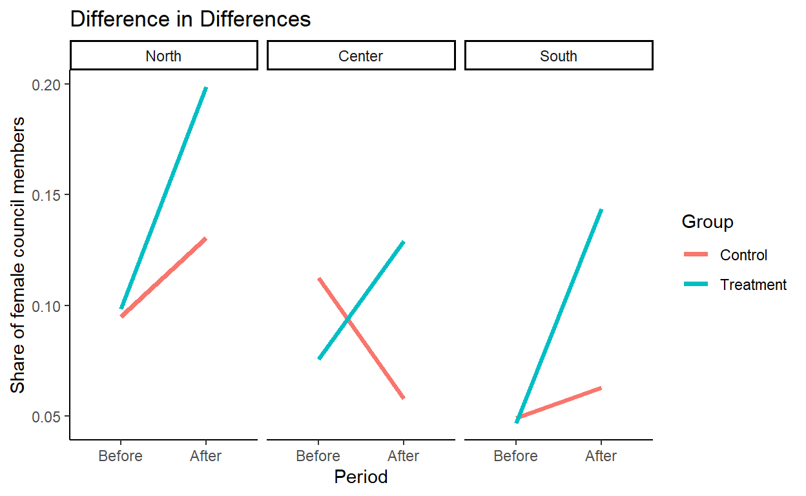

Evidence from the 1993 Italian local elections law reform
Female underrepresentation in politics is a crucial issue in most advanced democracies. As of today, only 30 countries in the world have a woman as Head of State / Government, and only 26% of national parliamentarians are women1. Policies explicitly aimed at reducing the gender gap in political representation have long been subject to extensive normative debate, and the positive question of their impact has generally held a marginal role in public discourse. The present study attempts to assess the impact of one of such policies. I study the causal effect of the 1993 local electoral law reform in Italy, which mandated that no more than two-thirds of candidates for local councils be of the same gender. I first discuss a theoretical framework within which the policy can be understood, and then turn to the empirical question of impact evaluation.
In early 1993, the Italian parliament passed a national reform concerning the electoral mechanism for local elections. The main legislative innovation of the reform was the replacement of a proportional system with a two-round, coalition-based one, and the direct election of Mayors and Regional Presidents. Among the many provisions of the law, however, was one aimed at the reducing the staggering gender gap in political representation. As of 1992, women represented only 3.7% of incumbent Mayors, and 8.9% of local council members. The gaps have kept shrinking since, but still remain considerably high at 15.2 and 34.3% respectively. While a plethora of factors have played a role in the past three decades, it is interesting to ask what fraction of the gap reduction can be ascribed to the reform itself. There are two ways of answering the question. The first looks to the reform from a long-term perspective: it posits that the effects of the reform will manifest themselves in a gradual fashion over the years, by way of incrementally changing cultural biases and political barriers to entry. It reasonably assumes that a first push towards gender equality will lead to a virtuous snowball effect. The second approach only considers the immediate, mechanic impact of the reform. While the former arguably offers a more thorough understanding of the phenomena at play, for the sake of practicality and warranted inference, this study will take the latter approach. I am thus interested in estimating the short-term, direct effects that the 2/3 mandate had on the share of women holding local elected positions.
To measure the percentage of women in elected offices in local councils, I exploit the publicly available Registry of local officials2, provided by the Italian Ministry of the Interior. The annual datasets contain demographic information about local elected officials holding office at the time of the report at the municipal, provincial, and regional level, and allow for the design of an observational study measuring the variation in the gender makeup of local institutions following the reform. There are three main levels of officials covered in the municipal data: Mayors, local government secretaries (“assessori”, the rough equivalent of ministers at the national level), and council members (the counterparts of national members of parliament).
To obtain my final working dataset, I first merge the 1992 and 1993 tables and proceed to remove all duplicate entries. I then subset the data to limit my analysis to officials elected in the two year around the reform introduction (1992 and 1993). Subsequently, I create a dummy treatment variable based on the date of the mayoral election, which takes value 1 if the election took place after the reform, and 0 otherwise. I then aggregate individuals at the municipality and election cycle level, and assign the same treatment variable to all officials in the subgroup.
For the before-and-after portion of the study, I repeat the same process with the 1987 and 1988 datasets, and merge the four cleaned data sources in a single dataframe on the basis of treatment assignment (almost all municipalities are matched by election year pairs (1987 - 1992) and (1988 - 1993)).
The replication files can be found in the project’s repository
The new local electoral law officially went into effect in April 1993. I consider local elections held up to a year before and after the introduction of the reform, and exploit the quasi-random assignment to treatment (election cycle) of different municipalities. The unconfoundedness assumption is discussed below.
I take the share of women elected in municipal councils as my dependent variable. I then link the 1992-1993 dataset with the previous election cycle (1987-1988, as municipal elections are held every five years). I use a difference in differences estimator to gauge the effect of the reform. Treatment assignment is dependent on the election cycle, as follows: councils elected in 1988 + 1993 fall into the treatment group, while those elected in 1987 + 1992 constitute the control group. The before-and-after difference is the gap in share of women between election 0 and election 1 (i.e. \(E_{1992} - E_{1987}\) or \(E_{1993} - E_{1988}\), depending on treatment status). I control for a set of relevant covariates (chiefly population size and geographical region) and document a statistically significant effect of the reform on women representation in local politics.
The validity of my estimate relies on the assumption that assignment to treatment (election cycle) is essentially random. There are a number of reasons to believe that this is true, thereby ruling out confounding bias. A major source of concern is the possibility of self-selection into a specific treatment status. This might happen, for instance, if some kind of anticipation effect is at play, e.g. if officials in a given municipality sense that the reform will bring about unwanted legislative innovations and act to avoid being assigned to treatment (i.e. facing an election after the reform is implemented). This possibility, albeit theoretically substantiated, is practically impossible due to the way in which local elections are called in Italy. Municipalities are not allowed to independently call an election before its due date, which is set my the Ministry of the Interior in a centralized manner. Moreover, the candidate gender quota represented only a minor detail in the context of a major electoral reform that radically transformed local political races across administrative levels. The hypothesis of self-selection into treatment or control can therefore be confidently rejected.
Another source of concern is due to the asynchronous administration of treatment, i.e. the non-simultaneous administration and observation of treatment outcome relative to the control group. One might doubt that other factors, independent of the reform, might have influenced the dynamics of the share of women in local politics between the observation of control and that of treatment (1992 vs 1993). An example of such a factor might be an increase in sensitivity to gender equality issues between the two election cycles. To test this hypothesis, I quantify the change in another metric related to gender equality in politics that was not directly targeted by the reform. I use the share of female Mayors as my “control metric”, and find no statistically significant differences between the treatment and the control groups in that respect. I elaborate on these findings in the discussion section.
Operationally, I choose the share of female council members as my main working outcome variable, and run a linear regression modeled by the following equation:
\[y = \alpha + \lambda R + \gamma P + \delta(R\times P) +\sum_{i = 1}^{N - 1}\omega_iG_i + \epsilon_i\] where \(y\) represents the share of women; \(R\) is a dummy variable taking a value of 1 if the municipality belongs to the 1988 - 1993 electoral cycles (treatment group), and 0 otherwise (1987 - 1992 cycles); \(P\) is a dummy variable representing the binary period of the observation (Before - After). It takes a value of 1 if the election took place in 1992 or 1993, and 0 otherwise (1987 or 1988). Finally, the coefficient of the interaction term, \(\delta\), is the Difference in Differences estimator. I also control for N = 3 geographic macroareas (North, Center, South) as described below. Since I assumed treatment assignment to be random, I am expecting a null estimate for \(\lambda\), my treatment dummy.
To quantify the control metric, the share of female Mayors, I run the following regression:
\[y_{\text{mayor}} = \alpha_m + \lambda_m R + \gamma_m P + \delta(R\times P) + \epsilon_i\]
In order to justify my causal assumptions, I expect a null and / or not statistically significant estimate for \(\delta_m\), reflecting the null effect of the reform on the share of female Mayors.
Firstly, I explore the difference in women representation between the pre- and post-reform local election cycles. I find a +8 percentage points difference in the share of women elected as council members and a +7 in the local secretaries share. The delta in the share of female Mayor is instead negligible. As already mentioned, the latter result is not surprising, as the new electoral law only directly targeted candidates for local councils, while the role of gender in the selection mechanism for Mayors and local secretaries was left untouched. The additional boost in the female share of local secretaries is explained by the fact that those roles are often selected by the Mayor-elect among council members or candidates therefor, and 1993 was the very first year in which Mayors were also allowed to choose external members for the positions of local secretaries.
# A tibble: 3 x 2
type impact
<chr> <dbl>
1 Mayors 0.00346
2 LS 0.0744
3 CM 0.0794 | Gender | Post | Pre | Diff. | Post | Pre | Diff. | Post | Pre | Diff. |
|---|---|---|---|---|---|---|---|---|---|
| F | 0.06 | 0.06 | 0 | 0.15 | 0.08 | 0.07 | 0.15 | 0.07 | 0.08 |
| M | 0.94 | 0.94 | 0 | 0.85 | 0.92 | -0.07 | 0.85 | 0.93 | -0.08 |
These figures, however, should not be interpreted as causal effects before adjusting for potentially unbalanced covariates in the two samples. To address these concerns, I run the three regression models outlined above with the following variables as controls:
It is a well-established fact that urban electorates tend to vote more progressive, which in turn might be correlated with higher levels of gender equality in political representation. To account for this, I control for population size in my regression. Moreover, given the substantial socio-economic divide that exists in Italy, I also control for the geographic macro-area through two dummy variables, Geo-Center and Geo-South.
| All regions | North | Center | South | |
|---|---|---|---|---|
| (Intercept) | 0.104*** | 0.096*** | 0.120*** | 0.050*** |
| (0.008) | (0.014) | (0.031) | (0.009) | |
| Period (Before / After) | 0.011 | 0.031 | -0.066+ | 0.009 |
| (0.010) | (0.019) | (0.040) | (0.012) | |
| Year Pair (treatment) | -0.002 | 0.002 | -0.044 | -0.003 |
| (0.008) | (0.015) | (0.032) | (0.009) | |
| Interaction (DiD) | 0.082*** | 0.070*** | 0.120** | 0.088*** |
| (0.010) | (0.020) | (0.041) | (0.012) | |
| Central region | -0.046*** | |||
| (0.005) | ||||
| Southern region | -0.054*** | |||
| (0.003) | ||||
| Population | -0.000 | 0.000 | 0.000 | -0.000* |
| (0.000) | (0.000) | (0.000) | (0.000) | |
| Num.Obs. | 3356 | 1115 | 382 | 1859 |
| R2 | 0.271 | 0.256 | 0.102 | 0.237 |
| R2 Adj. | 0.270 | 0.254 | 0.093 | 0.235 |
| + p < 0.1, * p < 0.05, ** p < 0.01, *** p < 0.001 |
The table presents the results of the regressions performed on the whole country and on the three macroareas. The main term of interest is the interaction coefficient, which constitutes the DiD estimate. It suggests a treatment effect of more than 8 percentage points at the national level, and fluctuates slighlty across macroareas. The result is statistically significant at the 0.001 level. This implies that the reform almost doubled the share of female local council members.
Another important finding is the null coefficient of the treatment variable, which entails that the difference in means between the treatment and the control group is close to zero. This supports the intitial working hypothesis of randomized assignment to treatment, which allows me to interpret the DiD estimate as evidence of a causal link between the reform and the higher share of female council members in treated municipalities. The Period coefficient is also negligible and not statistically significant, meaning that little to no progess in the outcome variable can be ascribed to the effect of time between the first and the second election, making it even more unlikely for the observed difference between the 1992 and 1993 elections to be due to some external, time-dependent effect.

To address the concern that a factor other than the effect of the reform might have played a role in the difference between the treatment and control group, thereby inflating the interaction term, I check for differences in the share of female Mayors before and after the reform using an equivalent study design as for the local council analysis. Presumably, if the reform was the only driver of the difference in differences, no significant effect should be observed in the share of Mayors, since the reform did not target Mayor gender. Conversely, with confounding factors at play, such as a positive change in preferences for gender equality, the gender of Mayors would also be affected. Given my initial assumptions, I expect to find null results when regressing Mayor gender on period and treatment.
Below is the regression table reporting the coefficient estimates, the standard errors, and the p-values (in brackets). I find no statistically significant effect of the interaction term on mayoral gender (p-value: 0.66). I can therefore conclude that the treatment only affected gender balance outcomes for council members, and was neutral towards Mayors. This allows me to exclude a major source of concern for confounding bias, thereby fortifying my causal assumptions.
On a methodological note, the first regression model below is equivalent to a difference in means summary table, since all the variables are binary.
| DiD | DiD - Geographic macroarea | |
|---|---|---|
| Period (Before / After) | 0.045 | 0.045 |
| 0.024 (0.066) | 0.024 (0.063) | |
| Year Pair (treatment) | 0.014 | 0.011 |
| 0.020 (0.466) | 0.020 (0.588) | |
| Inteaction effect (DiD) | -0.011 | -0.011 |
| 0.026 (0.666) | 0.026 (0.675) | |
| Central region | -0.020 | |
| 0.013 (0.110) | ||
| Southern region | -0.032 | |
| 0.008 (0.000) |
The present study evaluated the impact of a local electoral law reform with the aim of assessing the effectiveness of gender quotas in candidate lists in promoting a more equal gender representation in politics. Leveraging the random assignment to election year, I employed a difference-in-differences identification strategy to determine the effect of the reform on the female share of local council members. I found a statistically significant impact of the order of 8%. In order to assure that my causal assumptions were sound, I addressed confounding bias concerns by measuring the difference in the share of female Mayors before and after the reform, and found null results. While my research suggested that even soft quotas might have a substantial impact on gender representation, this study only assessed the short-term effects of such a reform. Intuitively, the policy is likely to have brought about a series of incremental cultural changes that progressively paid off in the long run. Further studies should aim at identifying these subtler effects in order to fully gauge the relevance of similar measures.
UN Women Facts and Figures: https://www.unwomen.org/en/what-we-do/leadership-and-political-participation/facts-and-figures#_edn1↩︎
“Anagrafe degli amministratori locali”, Ministero dell’Interno: https://dait.interno.gov.it/elezioni/anagrafe-amministratori↩︎